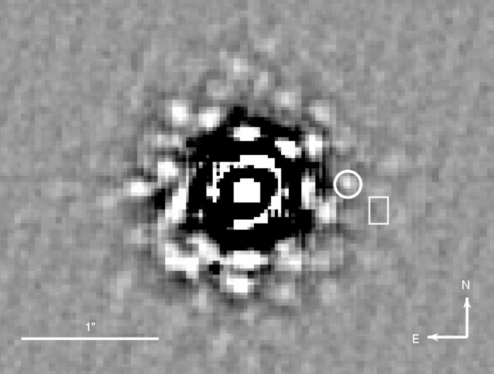

Exoplanets and Brown dwarfs
Star and planet formation
Young stellar populations
Astronomical instrumentation and observing techniques for high contrast and high angular resolution applications.

Pre-discovery image of GQ Lupi B (marked by a white circle), which we observed on 1994-04-02 with the ESO 3.6m, the COME-ON+ adaptive optics system, and the SHARP near-infrared camera. The data confirmed the companion cadidate to be co-moving with the star. An unrelated background source would have been located in the region marked by the white box (Janson et al. 2006)